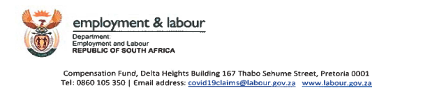

Repealed
This General Notice was repealed on 23 July 2020 by Directive on Compensation for Workplace-Acquired Novel Corona Virus Disease (COVID-19).
This is the version of this General Notice as it was when it was repealed.
South Africa
Compensation for Occupational Injuries and Diseases Act, 1993
Compensation for Occupationally-acquired COVID-19
General Notice 193 of 2020
- Published in Government Gazette no. 43126 on 23 March 2020
- Commenced on 23 March 2020
- [Up to date as at 23 March 2020]
- [Repealed by Directive on Compensation for Workplace-Acquired Novel Corona Virus Disease (COVID-19) (General Notice 387 of 2020) on 23 July 2020]
Schedule
2. The notice for compensation of occupationally-acquired Corona virus disease (Covid-19) comes into effect on the date of publication hereof and shall be implemented with immediate effect thereon. 3. All employers and Medical Service Providers must follow the stipulated prescripts when submitting claims and supporting medical reports for Covid-19. 4. When submitting reports online through the CompEasy system or Mutual Association Claims systems, Medical Service Providers must use the emergency Covid-19 ICD-10 code: U07.1 as proposed by the World Health Organization (WHO). VUYO MAFATA COMPENSATION COMMISSIONER DATE: 2020/03/20Schedule A
Circular No. CF/03/2020
The following notice is issued to clarify the position of the Compensation Fund with regard to compensation of claims for Covid-19.1. Acronyms
| COID Act | Compensation for Occupational injuries and Diseases Act, 130 of 1993 |
| Covid-19 | Novel Corona Virus Disease of 2019 |
| DOH | Department of Health, South Africa |
| WHO | World Health Organization |
| ILO | International Labour Organization |
| SARS-Cov-2 | Severe Acute Respiratory Syndrome Corona Virus 2 |
| RNA | Ribonucleic Acid |
2. Definition
Coronavirus Disease (COVID-19) is a viral infection of the upper respiratory system which presents with flu-like symptoms ranging from mild fever, dry cough, runny nose, sneezing to moderate and severe symptoms like productive cough, high fever, shortness of breath and general malaise. In its severe form it can present with pneumonia, cough with haemoptysis and respiratory failure. It is transmitted through droplets suspended in the air during coughing and sneezing from an infected source. Occupationally-acquired COVID-19 is a disease contracted by an employee as defined in the COID Act arising out of and in the course of his or her employment. This notice deals with occupationally-acquired COVID-19 resulting from single or multiple exposures to confirmed case(s) of COVID-19 in the workplace or after an official trip to high-risk countries or areas in a previously COVID-19-free individual. A claim for occupationally-acquired COVID-19 shall clearly be set out as contemplated in and provided for in sections 65 and 66 of the COID Act.3. Diagnosis
4. Impairment
5. Benefits
6. Reporting
7. Claims processing
The Office of the Compensation Commissioner shall consider and adjudicate upon the liability of all claims. The Medical Officers in the Compensation Commissioners' Office are responsible for medical assessment of the claim and for the confirmation of the acceptance or rejection of the claim.COVID-19 exposure and medical questionnaire
(To be completed by employer):
Employee details| Name and Surname | |
|---|---|
| Contact Number | |
| Nationality | |
| ID Number | |
| Email Address | |
| Occupation |
| Name of Employer | ||||
|---|---|---|---|---|
| Industry/Sector | ||||
| Provinces | ||||
| Contact person | ||||
| Contact details |
Phone No. |
|||
| Area Travelled To | ||||
|---|---|---|---|---|
| Date Travelled | ||||
| Length of Stay | ||||
| Reason for Travel | ||||
| Date of Contact | ||
|---|---|---|
| Contact Reported? | Yes | No |
| Period of Exposure | ||
| Cases on quarantine in area of work | ||
| Total confirmed cases in the workplace | ||
| Medical Condition | ||||||||
|---|---|---|---|---|---|---|---|---|
| Pregnancy (trimester:____) | Post-partum (< 6 weeks) | |||||||
| Cardiovascular disease, including hypertension | immunodeficiency, including HIV | |||||||
| Diabetes | Renal disease | |||||||
| Liver disease | Chronic lung disease | |||||||
| Chronic neurological or neuromuscular disease | Malignancy | |||||||
| Other(s), please specify | ||||||||
| Medical Condition | Year of Diagnosis | On Treatment? | ||||||
| Pre-existing conditions: | Yes | No | ||||||
| Occupational disease: | Yes | No | ||||||
| Name | Signature | Date | ||||||
History of this General Notice
-
23 July 2020
-
23 March 2020 this version
Published in Government Gazette no. 43126General Notice commences.
Download for later
Download the current version of this By-law to read later on your desktop, e-reader or tablet.